Installing Splice Machine on Amazon Web Services
This topic only applies our On-Premise Database product.
You can download our free trial and learn more about Splice Machine products here.
The fastest way to deploy Splice Machine is on the Amazon Web Services (AWS) platform on EC2 instances using cloud.splicemachine.com.
Getting Started with the SandBox Cluster Generator
To generate your Splice Machine sandbox cluster, point your browser to:
www.splicemachine.com/get-started/sandbox-start/
Fill in the form that's displayed:
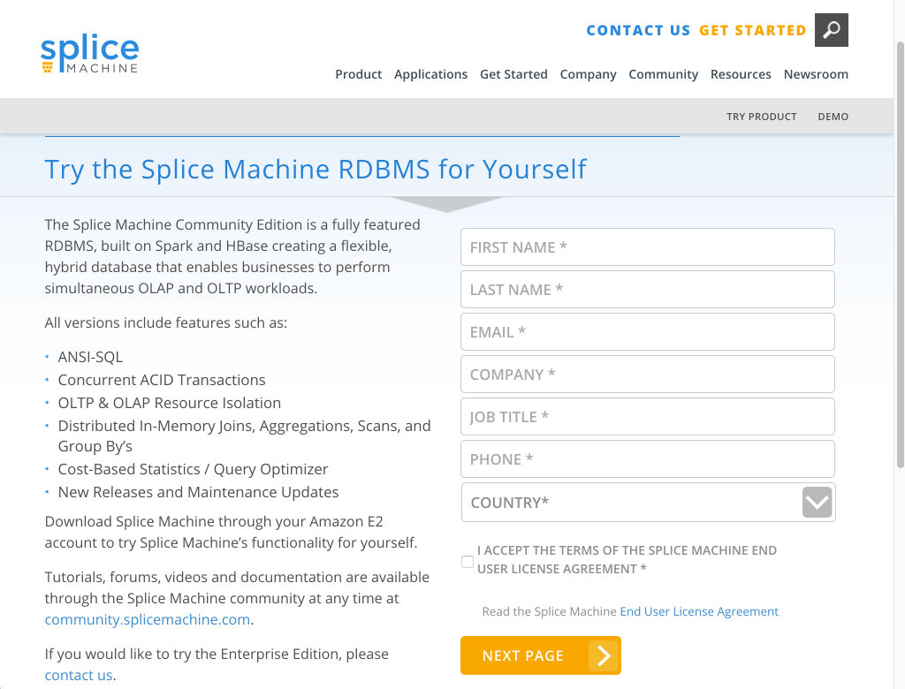
Click the NEXT PAGE button to proceed and configure your cluster.
Configure Your Cluster
AWS provides numerous choices for configuring your sandbox; Splice Machine recommends a minimum configuration such as the following:
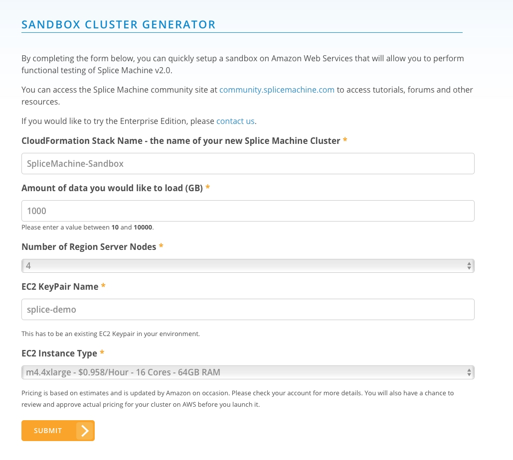
When specifying your EC2 KeyPair name, DO NOT include any file name suffix. For example, enter splice-demo, NOT splice-demo.pem.
When you click the SUBMIT button, Splice Machine generates an AWS cluster generator template file, which is a json file that you can download for safekeeping.
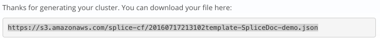
Before launching your cluster, select in which AWS region you want your cluster located:
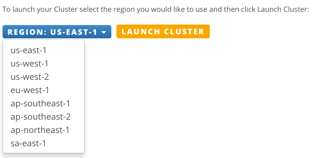
Click the LAUNCH CLUSTER button to proceed to finalizing your sandbox template.
Finalize Your Sandbox Stack Template
Your sandbox stack template file should already be entered into the Amazon S3 template field at the bottom of the screen; if you're using a different template file, you can select that instead; this is NOT RECOMMENDED.
Select Your Sandbox Template
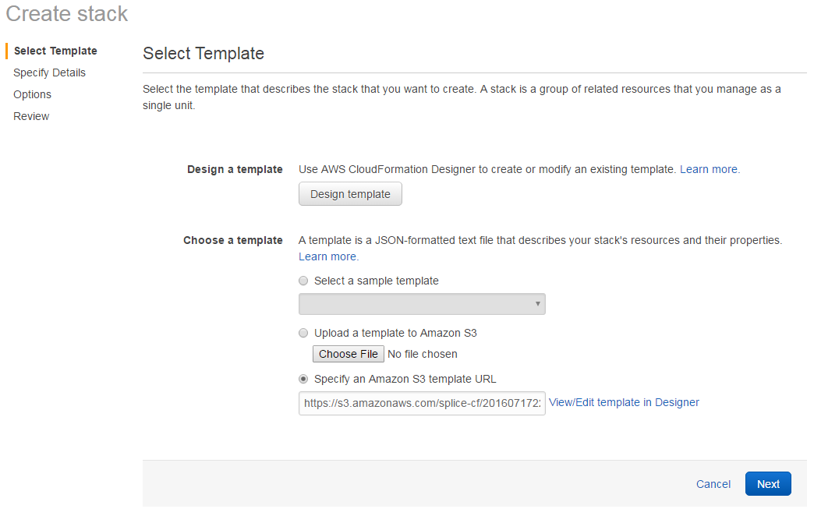
Click the Next button to proceed to the Specify Details screen.
Rename Your Stack if Desired
You set up a name for your stack at the beginning of this process; however, you can change that here if you want. Then click Next to continue on to the Options screen.
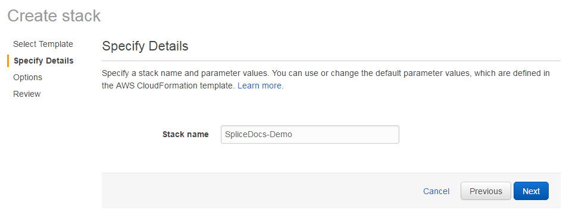
Specify Options for Your Stack
In the Options screen, you can add tags and set advanced options for your sandbox stack.
Adding Resource Tags to the Stack, if Desired
You can optionally tag your sandbox stack with whatever key values you want. For example:
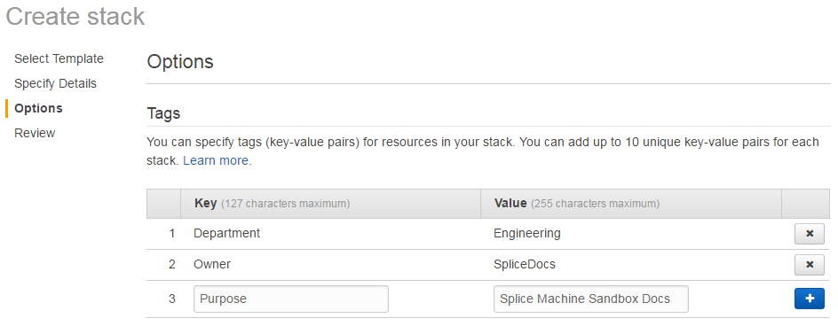
Setting Advanced Options for Your Stack
You can also configure advanced options for your sandbox stack in the Options screen, including notification, failure rollback, and policy options. For more information about these options, click the Learn more button.
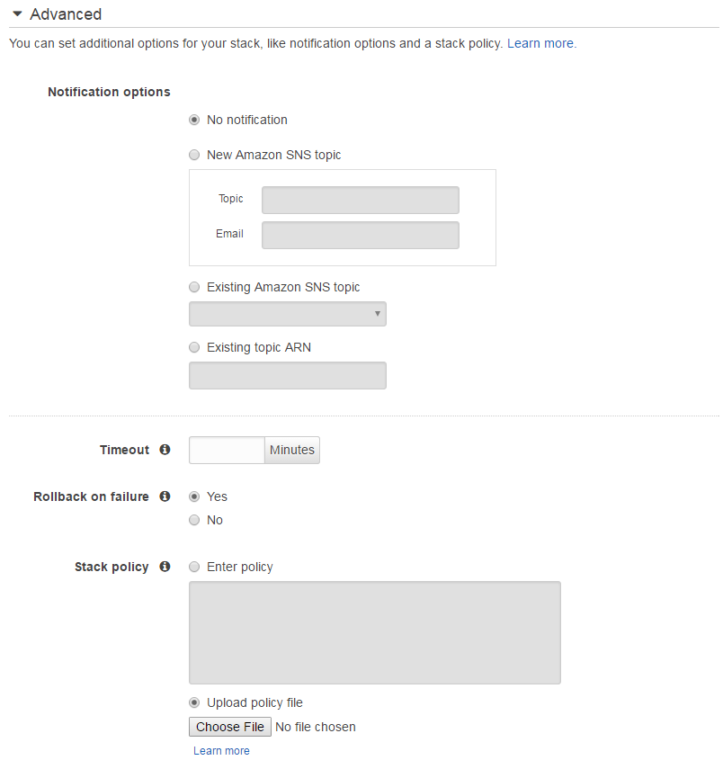
Click the Next button at the bottom of the Options screen to proceed to the Review screen.
Review Your Sandbox Stack Configuration
Finally, review your stack configuration, and then click the Create button to start creating your sandbox cluster.
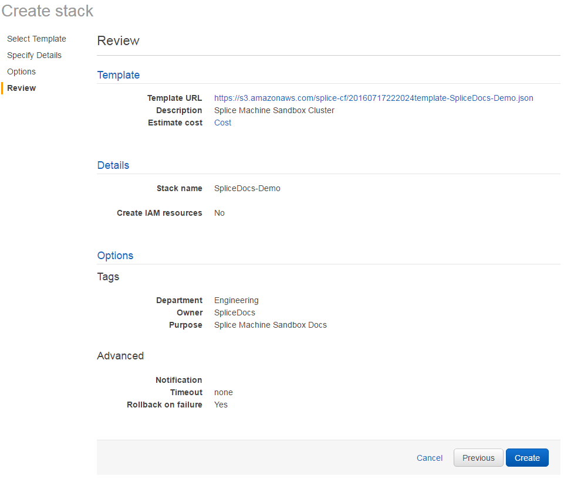
Finish Launching Your Cluster
When AWS starts creating your cluster, you'll see a progress screen like this:
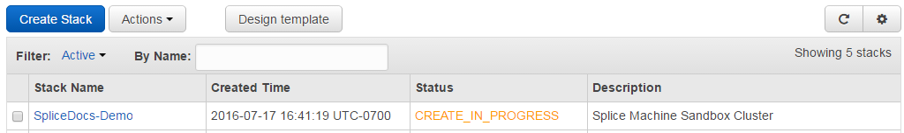
Depending on your configuration, the cluster may take some time to create. When it finishes, you'll see that the status has changed to complete:
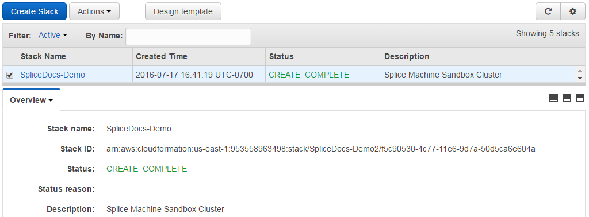
After the status changes to complete, you can display your nodes by clicking the stack name link, and then viewing Outputs, which will look something like this:
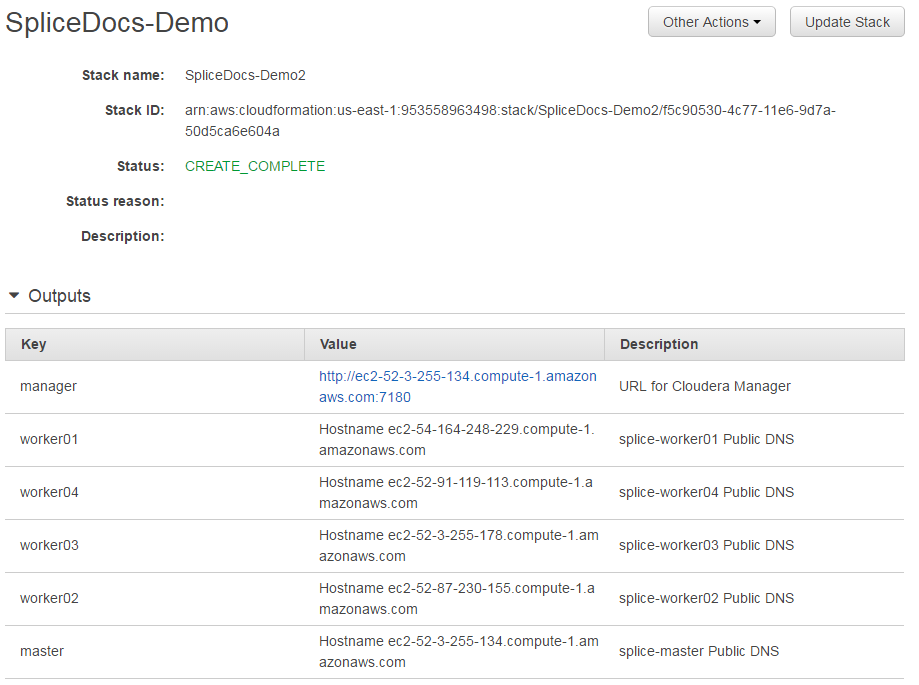
Use Cloudera to Manage your Cluster
You can now log into Cloudera Manager for your cluster by clicking the manager link shown in the Outputs screen, which lands you on the login screen:
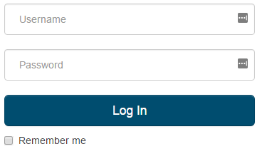.
After logging in, you can use Cloudera to manage your Splice Machine cluster.
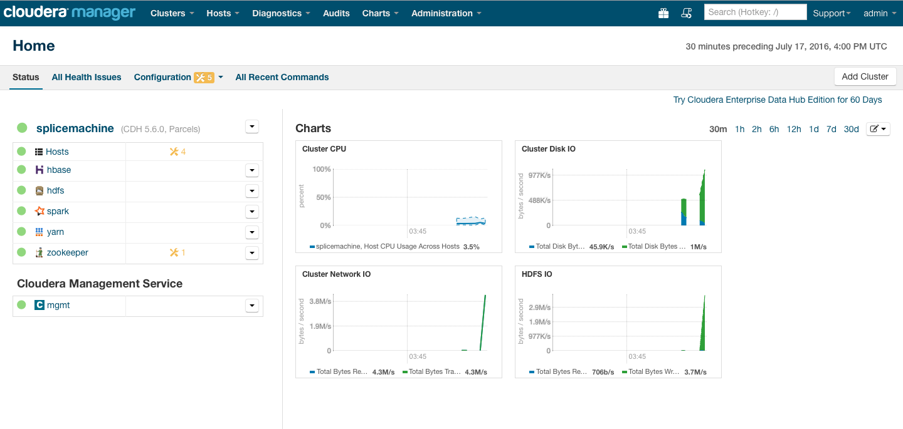
Using Splice Machine with Linux
You can now log into one of your sandbox nodes and use Splice Machine from a terminal window on your computer. To do so, ssh into the address of the node, which you can see in the Outputs screen from when you created the sandbox, or by viewing your cluster hosts in Cloudera Manager.
Make sure that you include the full name of your EC2 KeyPair when connecting. For example:
ssh -i ~/Downloads/splice-demo.pem.txt centos@ec2-54-164-248-229.compute-1.amazonaws.com
Once you're connected to Splice Machine, you can work with your database. For example:
~$ ssh -i ~/Downloads/splice-demo.pem.txt centos@ec2-54-164-248-229.compute-1.amazonaws.com Last login: Sun Jul 17 23:58:17 2016 from 10.250.0.10 [centos@ip-10-250-0-11 ~]$ sqlshell.sh ========= rlwrap detected and enabled. Use up and down arrow keys to scroll through command line history. ======== Running Splice Machine SQL shell For help: "splice> help;" SPLICE* - jdbc:splice://localhost:1527/splicedb * = current connection splice> show tables; TABLE_SCHEM |TABLE_NAME |CONGLOM_ID|REMARKS ----------------------------------------------------------------- SYS |SYSALIASES |272 | SYS |SYSBACKUP |912 | SYS |SYSBACKUPFILESET |1024 | SYS |SYSBACKUPITEMS |1200 | SYS |SYSBACKUPJOBS |1232 | SYS |SYSCHECKS |288 | SYS |SYSCOLPERMS |688 | SYS |SYSCOLUMNS |80 | SYS |SYSCOLUMNSTATS |1280 | SYS |SYSCONGLOMERATES |48 | SYS |SYSCONSTRAINTS |256 | SYS |SYSDEPENDS |304 | SYS |SYSFILES |336 | SYS |SYSFOREIGNKEYS |352 | SYS |SYSKEYS |240 | SYS |SYSPERMS |864 | SYS |SYSPHYSICALSTATS |1296 | SYS |SYSPRIMARYKEYS |368 | SYS |SYSROLES |800 | SYS |SYSROUTINEPERMS |704 | SYS |SYSSCHEMAS |32 | SYS |SYSSEQUENCES |816 | SYS |SYSSTATEMENTS |384 | SYS |SYSTABLEPERMS |640 | SYS |SYSTABLES |64 | SYS |SYSTABLESTATS |1312 | SYS |SYSTRIGGERS |576 | SYS |SYSUSERS |880 | SYS |SYSVIEWS |320 | SYSIBM |SYSDUMMY1 |1328 | 30 rows selected splice>